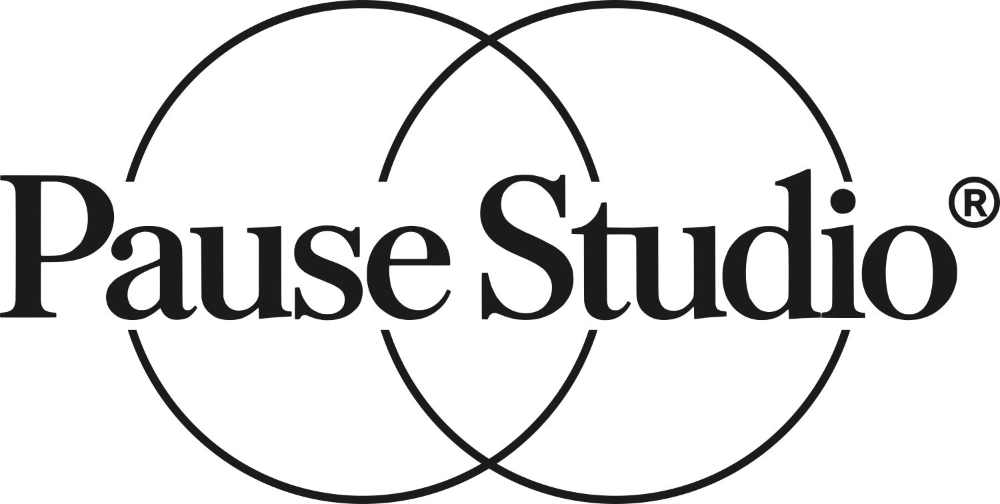
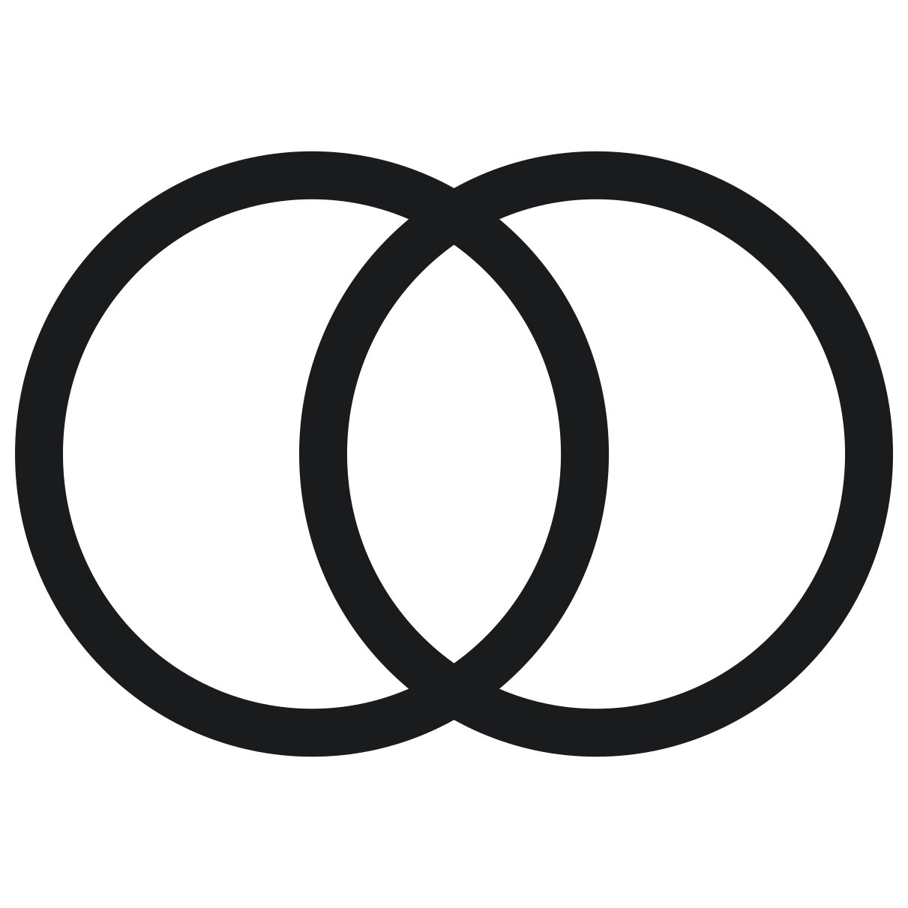
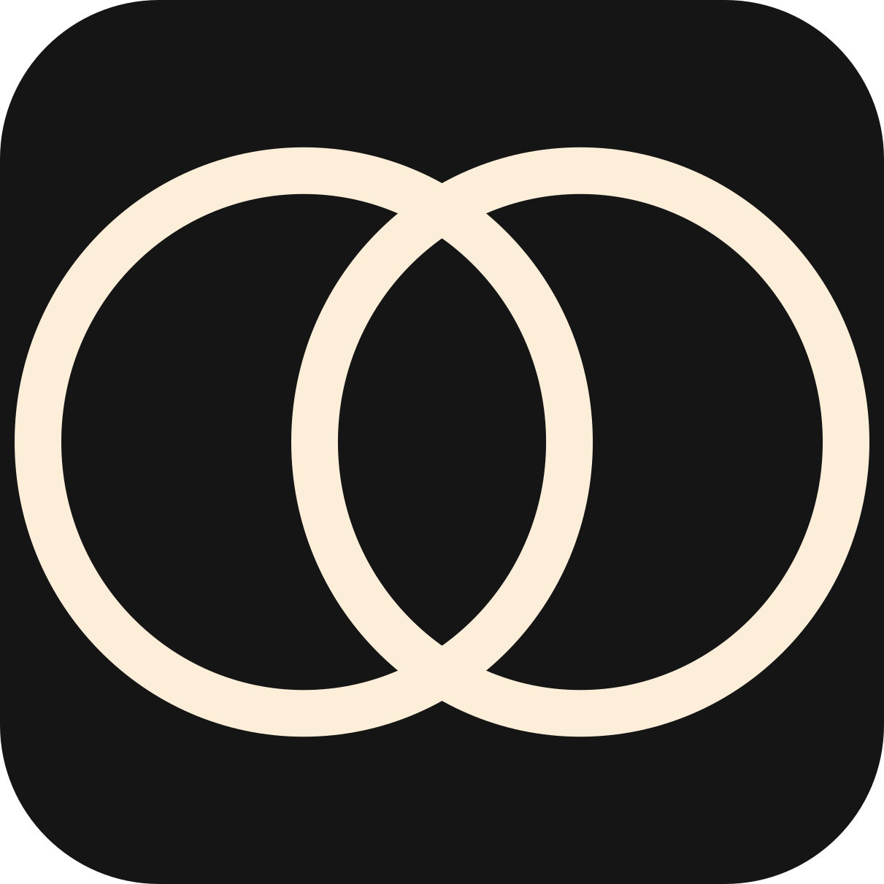
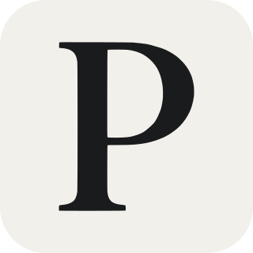
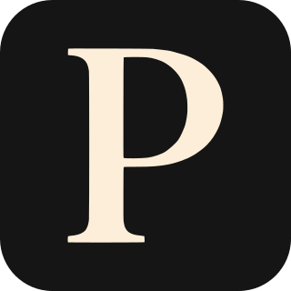

보내주신 PNG를 벡터(SVG)로 옮겼습니다. 모양·비율·간격은 그대로이고, 두 원과 ®의 바깥 원은 원본에서 측정한 값으로 정확한 도형을 다시 그렸습니다.

잉크 #1A1B1C · 크림 #FCEED8 (보내주신 두 파일의 색을 측정). 크림 원본 PNG는 가장자리가 흐린 빛 번짐이 있어, 같은 벡터에 색만 입혔습니다.
가로 120px까지 글자·원 모두 읽힙니다. 96px부터 원 선이 1px 아래로 얇아져 흐려집니다 → 사이트 헤더는 가로 140px 이상 권장, 모바일 헤더 120px.

16
16
16
16로고 전체는 16·32px에서 읽히지 않아 따로 필요합니다. A는 두 원만(작은 크기용으로 선만 굵게), B는 로고의 P 한 글자. 고르시면 그걸로 만듭니다.
로고는 대비가 큰 세리프 글자라, 한글도 획에 대비와 맺음이 있는 서체와 결이 맞습니다.